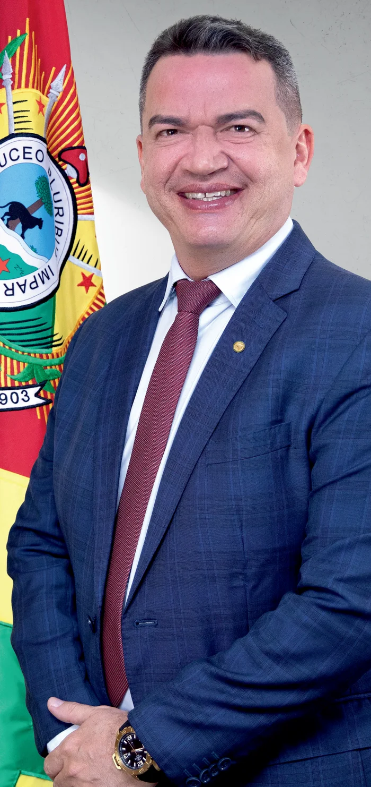
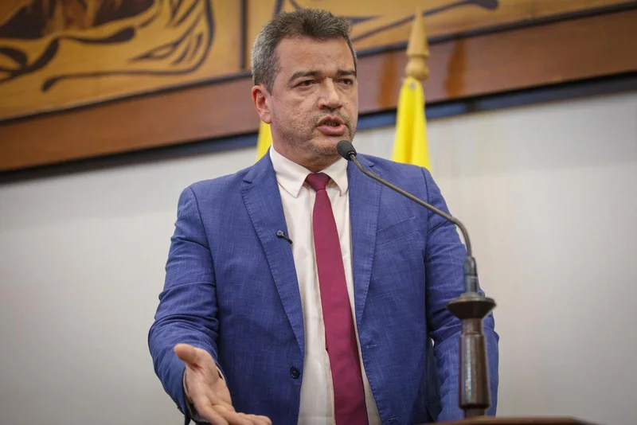
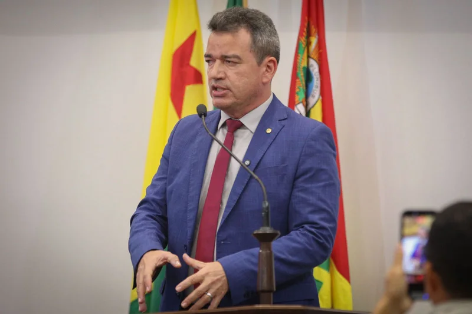
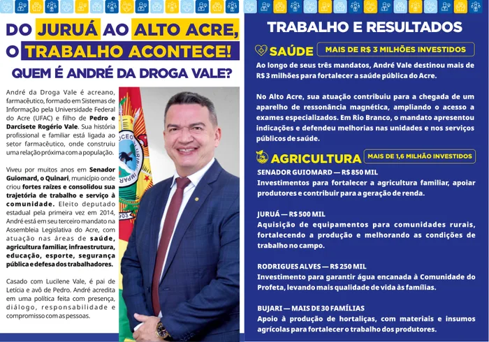

Senador Guiomard
R$ 850 milAgricultura familiarRecursos informados para apoiar produtores e fortalecer a agricultura familiar.
ACRE • ELEIÇÕES 2026
Uma trajetória que começou na farmácia da família e chegou à Assembleia Legislativa.


01 / CONHEÇA O ANDRÉ

Antes da vida pública, a história de André já estava ligada ao atendimento na farmácia da família.
Filho de Pedro Moura e Dercizete, André nasceu em Rio Branco, em 20 de outubro de 1975. Assumiu a direção da Droga Vale após a perda do pai, dando continuidade à história que também se tornou seu nome na política.
Formado em Sistemas de Informação pela Universidade Federal do Acre, venceu sua primeira eleição para deputado estadual em 2014. Hoje, exerce seu terceiro mandato na Assembleia Legislativa.
Biografia na Assembleia Legislativa02 / TRAJETÓRIA
Origens, eleições e vida parlamentar. Conheça os acontecimentos, veja as fotografias da época e consulte as fontes.
AS ORIGENS
André nasceu na capital acreana. Filho de Pedro Moura e Dercizete, assumiria, anos depois, a direção da farmácia da família. A Droga Vale também passaria a integrar seu nome na vida pública.
Fonte: biografia na AleacA CHEGADA À ASSEMBLEIA
Eleito pela primeira vez em 2014, André iniciou sua atuação na Assembleia Legislativa em 2015.
Na sessão de , declarou compromisso com a fiscalização dos recursos públicos e com o diálogo. A notícia foi publicada pela Aleac no dia seguinte.

ENTRE DOIS MANDATOS
Com 5.827 votos nas eleições de 2018, ficou na suplência. O retorno ao exercício do cargo ocorreria em abril de 2021, conforme o registro oficial de sua posse.
Fonte: notícia de posse da AleacO SEGUNDO MANDATO
André foi empossado pelo então presidente da Assembleia, Nicolau Júnior, em . A cerimônia marcou o início de seu segundo mandato como deputado estadual.
A foto publicada pela instituição registra esse momento.
Fonte: cerimônia de posse na Aleac
O TERCEIRO MANDATO
Reeleito em 2022, André teve o diploma expedido em . O registro do mandato informa início em e término previsto em .
PRODUÇÃO LEGISLATIVA
O texto do Projeto de Lei nº 99/2025 propõe aviso prévio de 24 horas para inspeções em novos estabelecimentos. É um registro de sua atividade legislativa; a apresentação do projeto não comprova sua transformação em lei.
Fonte: projeto original no SAPL (PDF)A CAMINHADA ATUAL
Candidato a deputado estadual pelo Progressistas, André participa das eleições de 2026 com o número 11444, conforme os materiais da campanha.
Acompanhar o perfil da campanhaFotografias históricas reproduzidas do acervo da Aleac, com links para as publicações de origem. Informações consultadas em .
03 / ATUAÇÃO PARLAMENTAR
Conheça iniciativas apresentadas por André e consulte os documentos de cada uma.
Consultar legislação por autorPropõe notificação com antecedência mínima de 24 horas para visitas de inspeção em novos estabelecimentos comerciais e industriais. O texto prevê comunicação oficial pela RedeSim Acre ou sistema equivalente.
O documento é um projeto de lei. Sua apresentação não equivale à entrada em vigor de uma lei.
Ler o projeto original (PDF)Solicita diálogo do governo estadual com Rio Branco, Cruzeiro do Sul e Sena Madureira para permitir o uso da plataforma digital de entrega de relatórios de medicamentos pelas vigilâncias sanitárias desses municípios.
Uma indicação é uma solicitação ao poder público; não comprova a execução da medida.
Ler a indicação original (PDF)Propôs dar o nome “Meu Amer.Lan” ao sistema de digitalização da Vigilância Sanitária do Estado do Acre. O registro da Aleac informa aprovação em plenário, com 13 votos favoráveis.
A iniciativa trata da denominação do sistema, e não da criação de um aplicativo de estoque de medicamentos.
Consultar a votação na AleacNo início de sua atuação parlamentar, André declarou compromisso com a fiscalização dos recursos públicos e com o diálogo para buscar soluções para os problemas do Acre.
Ler o registro da AssembleiaATUAÇÃO POR REGIÃO
Conheça as ações e os recursos apresentados no balanço da campanha.
Recursos informados para apoiar produtores e fortalecer a agricultura familiar.
Recursos informados para aquisição de equipamentos destinados a comunidades rurais.
Investimento relatado para levar água encanada à comunidade.
Apoio relatado com materiais e insumos para produtores de hortaliças.
O folder relata contribuição do mandato para a chegada de um aparelho de ressonância magnética.
O material relata investimentos de apoio à atuação da Polícia Militar no município.
Fonte: folder da campanha. Os valores e relatos são apresentados conforme o material; não equivalem, por si só, à comprovação de pagamento ou execução.

A Aleac registra o pronunciamento sobre a posse de servidores e o anúncio de uma nova vistoria na rodovia.
Ler na Assembleia ↗
Pronunciamento sobre as condições da estrada e anúncio de indicação ao DNIT.
Ler na Assembleia ↗Fonte e imagens: Agência Aleac. Seleção de publicações; o arquivo completo está no portal da Assembleia.
04 / PROPOSTAS
Seis temas, propostas concretas.
Abra cada tema para conhecer os compromissos.
Defender a ampliação de mutirões e serviços regionalizados para reduzir a espera por consultas especializadas, exames e cirurgias.
Buscar recursos para ampliar equipamentos e serviços de diagnóstico nos hospitais regionais, evitando que pacientes precisem viajar até Rio Branco para realizar determinados exames.
Avançar na modernização da assistência farmacêutica, incentivando prescrição eletrônica, integração dos sistemas e mais segurança e agilidade na dispensação de medicamentos.
Defender recursos permanentes para recuperação e manutenção dos ramais, priorizando comunidades rurais, transporte escolar e escoamento da produção.
Manter a fiscalização e a cobrança junto ao Governo Federal e aos órgãos responsáveis para garantir obras estruturantes, qualidade dos serviços e condições permanentes de trafegabilidade.
Propor medidas para simplificar licenças e procedimentos de baixo risco, ampliar serviços digitais e reduzir o tempo necessário para abrir e regularizar pequenos negócios.
Defender que, nos casos permitidos pela legislação e sem risco à população, micro e pequenas empresas tenham oportunidade de corrigir irregularidades antes da aplicação imediata de penalidades.
Ampliar a destinação de emendas para máquinas, implementos, mecanização, transporte e estrutura de apoio às associações e cooperativas de pequenos produtores.
Fortalecer políticas de aquisição da produção da agricultura familiar para abastecimento de escolas e outras instituições públicas, gerando renda no campo e movimentando a economia local.
Defender mais viaturas, equipamentos, comunicação e tecnologia para ampliar a presença das forças de segurança nas comunidades rurais.
Propor estudos para ampliar o videomonitoramento e permitir, dentro da legislação, a integração voluntária de câmeras particulares ao sistema público de segurança.
Defender auxílio temporário e políticas de qualificação e inserção profissional para mulheres em situação de violência doméstica que estejam em condição de vulnerabilidade, com critérios definidos em lei.
Buscar a ampliação do atendimento especializado às mulheres vítimas de violência nos municípios, fortalecendo a integração entre segurança, assistência social, saúde e Justiça.
05 / NO INSTAGRAM
Veja o destaque e as outras publicações. Toque no vídeo para assistir.
Se uma publicação não carregar, use o link para assistir no Instagram.
07 / PARTICIPE
Acesse os canais e personalize sua foto de perfil com a moldura da campanha.
Abra o convite para acessar o grupo da campanha no WhatsApp.
Entrar no grupoAbra o criador no Twibbonize para personalizar sua foto.
Imagens ilustrativas enviadas pela campanha. A personalização é feita no site externo.

MATERIAL DE CAMPANHA
Conheça a biografia e o balanço de atuação no material completo, em duas faces.
Baixar folder em PDF